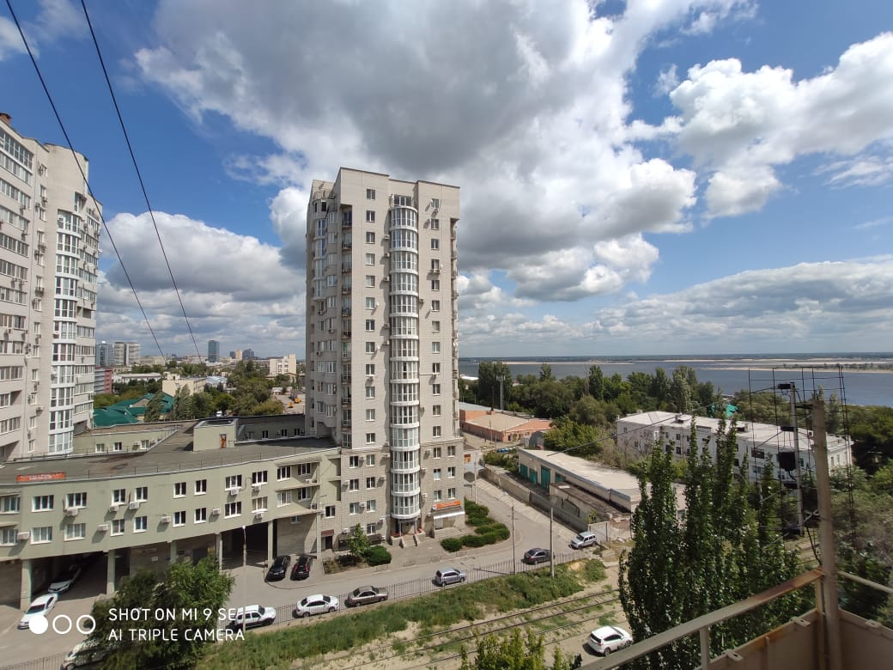
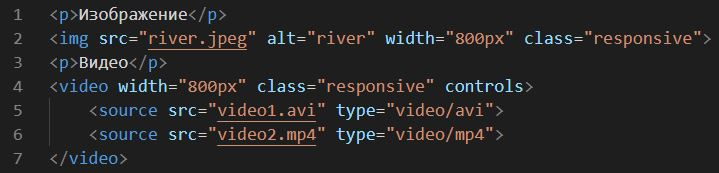
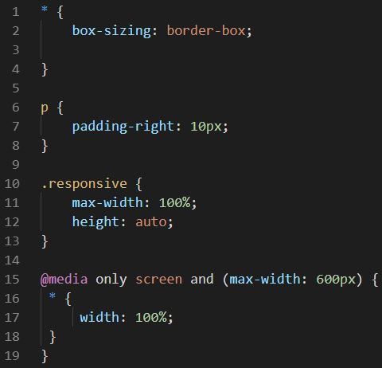

Responsive Web Design
Отображение в браузере:
Изображение
Видео
Код:
HTML
CSS
Примечание:
Адаптивный веб-дизайн делает вашу веб-страницу хорошо выглядящей на всех устройствах.
Адаптивный веб-дизайн использует только HTML и CSS.
Viewport
Viewport - это видимая пользователю область на веб-странице.
meta name="viewport" content="width=device-width, initial-scale=1.0"
Элемент meta viewport дает браузеру инструкции о том, как управлять размерами и масштабированием страницы.
Параметр width = device-width устанавливает ширину страницы, которая соответствует ширине экрана устройства (которая зависит от устройства).
initial-scale = 1.0 устанавливает начальный уровень масштабирования при первой загрузке страницы браузером.
Grid-View
Адаптивное сеточное представление обычно имеет 12 столбцов и общую ширину 100%, и будет уменьшаться и расширяться при изменении размера окна браузера.
Media Queries
Существует 5 основных групп устройств (5 контрольных точек):
/* Extra small devices (phones, 600px and down) */
@media only screen and (max-width: 600px) {...}
/* Small devices (portrait tablets and large phones, 600px and up) */
@media only screen and (min-width: 600px) {...}
/* Medium devices (landscape tablets, 768px and up) */
@media only screen and (min-width: 768px) {...}
/* Large devices (laptops/desktops, 992px and up) */
@media only screen and (min-width: 992px) {...}
/* Extra large devices (large laptops and desktops, 1200px and up) */
@media only screen and (min-width: 1200px) {...}
Изображения и видео
Свойства max-width: 100% и height: auto позволяют сохранить пропорции изображения при масштабировании, не допуская искажений.
Background
Свойство background-size: contain позволяет фоновому изображению сохранить пропорции при масштабировании.
Свойство background-size: 100% 100% растягивает фоновое изображение на всю область.
Свойство background-size: cover позволяет фоновому изображению масштабироваться на всю область, сохраняя исходные пропорции. При этом изображение может обрезаться по краям.